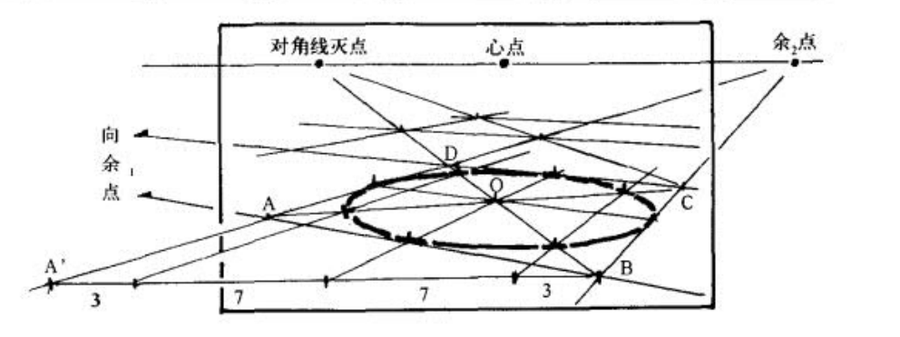
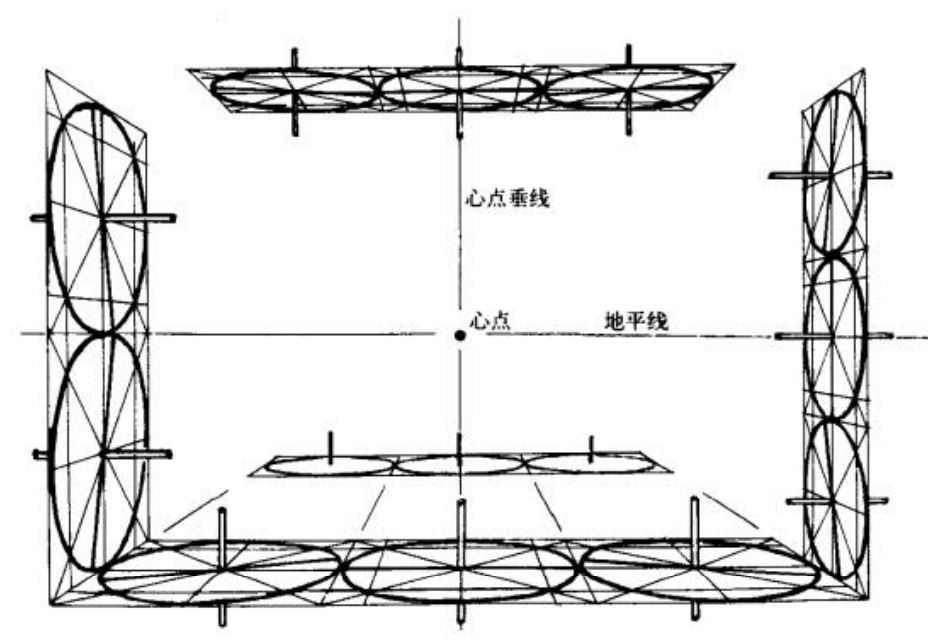

圆柱大法学习笔记
不得不说，这个UP主是真的有水平，我喜欢他的风格，全是干货，有理论又有实践，这就是动画师出身吗？我感觉我从中找到了过去编程学习新概念的乐趣……或许用这套方法，就连静物组合也变成了乐趣。迷之那啥老师，我记住你了。
其实在某种程度上我也看到了我自己……但我是在编程领域上这么做，对任何新鲜东西，都尝试去建立自己的心智模型，尝试尽量丢掉严谨的东西，以谁都能听得懂的自然的语言去描述。但这个老师明显远远跑在我的前面。瑞斯拜。但或许这种思想，没有权威，或者不把权威当成唯一的方式，就是前三十年自力更生进步的方式。
但这篇笔记只能说是……内容需要重新组织，太多了太乱了
研究迷之那啥老师的几个视频。
这系列视频实际上讲了三个问题——关于对透视学的批判，以疏密、比例去说服观众，带来空间感，而非尺规作图（虽然尺规作图同样重要，其理论必须掌握）；然后是关于透视分析和结构分析的差异以及后者的原则；最后是“圆柱大法”——总结圆形的特征和圆柱的特征，通过训练肌肉记忆和直觉去大量分析结构问题（这么说太抽象了，我得自己概括一下）。
透视学批判
https://www.bilibili.com/video/BV1eXQpY4EFK
在实际画画时不要真去尺规作图。
要抓最重要的，具体的物体的特征，如比例，疏密，面积（实际上疏密就是面积），扭曲程度（越靠近镜头越斜，越疏，越远离镜头越平，越密）。
观众，看的就是特征，应当研究观众的心理，潜意识，去让自己表达这些观众想要看的特征，而非是单纯正确的东西。
观众是感性的体验，画者是理性的表达，门道多着呢。
结构分析
https://www.bilibili.com/video/BV1YcXeYRE7o
透视关系和结构关系，这俩区分开。
透视关系，即空间感，体现在近大远小，边缘畸变，疏密……透视关系就是处理空间感，纵深感，需要使用透视图进行分析。
结构关系，或者说几何关系，即立体感，体积感。在透视构造成的空间里，去画一个局部的立体的结构，如人物，的过程，就是结构分析。
对超长焦，或者平行投影的物体，是没有透视分析的，但结构分析永远是有的。
可以说，透视画空间，画框框，做大的整个画面的分析，结构画局部，只是特定物体上的分析，往透视空间里塞东西。UP认为，透视分析只占15%的时间，剩下的全是结构分析。
也可以说，透视处理的是近景和远景的关系（这话就有意思，实际上我们从未在画面上直接画出什么消失点什么地平线，它们是不同物体之间的相互关系去定义的），什么怼在摄像机面前，什么怼的更远。
结构处理的则是转面问题。使用过正交视图就会发现，立体感并不依赖于近大远小（实际上近大远小给你的是空间感），实际上，立方体各个面的比例关系，确保这个就能体现立体感（就像上一个视频里画的，画三个圆圈也能想像出来相应的立方体）。
其实UP说的结构分析，我在做的 turnaround 训练也是练习这个的，虽然我完全没有谱啦。UP强调，训练时应当着重画弱透视。
把透视和结构分开，而且尽量强调结构……我觉得确实是一个思路。
结构分析的基本原则
https://www.bilibili.com/video/BV1YcXeYREMY
上面的弱透视，是第一个原则。弱透视把握不好，强透视必定把握不好（因为强透视镜头离物体更近，物体会展现更复杂的结构、透视关系，你必须更清楚地知道物体的结构才能把握好），硬要做比喻的话，就像健身的时候你应当先掌握慢动作后再去掌握爆发动作。再说强透视大多时候只是炫技用的，实际画的时候大多是弱透视。
再话说回来，如果脑海中能想像出某个角度的弱透视的样子，就有能力画出它强透视的样子了，只不过后者仍旧需要一些额外的训练。
另一个原则：必须用正方和正圆去进行结构分析，使用不规则的几何体会带来歧义。
该原则的一个体现是，应当使用方体和圆柱体去建构人体，而不是直接使用一堆椭圆去勾勒各体块的形体（就像proko中提出的bean那样，但这里也是有区别的，bean模型是为了表现头颅，躯干，盆骨之间的扭转，堆叠等的关系）。大师使用后者，是因为前者发生在大师的潜意识中了，如果上来就画后者，咋去进行进一步的分析呢。
另一个体现见这张图——看着我马上说它是一个压扁的圆柱体，但如果不使用底下的地砖去作为标识的话，是无法分辨出它是一个口红似的形状（斜切的圆柱）还是扁酒壶形状。
那应当怎么做？应当先把地板做好，在这里这是一个压扁的圆柱，所以画一个圆形地板（当然，表现在图中就是椭圆形）
同理，一个单独的四边形也是有歧义的，这个我实际上早知道了，这个四边形（在实际上）既可以是长方形也可以是正方形。
因此这里提出原则：画出的所有椭圆默认是正圆，画出的网格默认是正方形（当然，按实际需求来）。如果要画真正椭圆，就先把正圆铺出来，如果要画长方形，先把正方形画出来，切出长方形。
方圆
UP强调徒手画圆的重要性（草这UP的视频敢不敢逻辑再乱一点）。
透视圆的画法是透视分析和结构分析的桥梁。
圆柱大法，要徒手画空间中的圆（大透视的时候，第一个圆可能得用透视圆法画出来，后面的则根据感觉来，前有prelude方块，现有prelude圆）。
椭圆有三个性质——轴线方向，高矮，即沿长轴线方向上的大小，胖瘦，即沿短轴线方向上的大小。要能徒手画各种方向的高矮胖瘦的椭圆（其实只有胖瘦，因为胖瘦是相对于高矮的，所以可以直接说，“不同角度的不同胖瘦的椭圆”），要用长线画出来，不能蹭线，但可以多绕几圈（在同一笔）作为强调，画完了再擦掉，就像这样。
我记得drawabox里也有同样的练习，后面得去看看，以及各个透视情况下的圆柱长什么样这视频可能是不会讲的，我要另外去研究，反正这个本来也是要研究的！
圆柱法线
https://www.bilibili.com/video/BV1eFXeYxEgK
一句话概括——圆（画面上的椭圆），其法线方向就是垂直于其长轴的方向，因此知道了法线方向，就能够知道其长轴方向，就能画出这个椭圆（你问胖瘦？凭感觉！凭感觉一般都能画好！）。
当然，这个定理仅在弱透视下近似成立（实际上只在平行投影下完全成立）。而且应用这个定理时，同一个轴上的圆，其形状会是一样的，比如汽车的一对车轮，它们之间将不会有形状和大小上的差异（对平行投影是如此），但当然为了工程需要，当然可以做一下大小的差异做近大远小。
从新出发
写上面的内容已经是六月三十号，一个月之前了，现在是八月九号，继续！K大透视课上了两周，drawabox学了前两课，想到确实是该建立一个结构分析的练习方式了。重新看。
https://www.bilibili.com/video/BV1YcXeYRE7o/。
可以说，透视画空间，画框框，做大的整个画面的分析，结构画局部（空间中的内容），只是特定物体上的分析，往透视空间里塞东西。UP认为，透视分析只占 15% 的时间，剩下的全是结构分析，即小部分时间是画空间，大部分时间是画空间中的内容物。但透视分析建立空间，对这个空间的直觉是很重要的，对结构分析部分仍旧有重大意义……可不能说对它的练习只占 15%。
UP在评论中说到：通常来讲画一个大透视的画面，前十笔可能是透视学分析和关键造型的找，框架完成之后，往后可以使用圆柱大法。
透视分析，摄影机参与其中，大透视，结构分析，摄影机远离，弱透视……其实它们关系也挺相对的。这里其实直接按流程去做划分就行了。
我觉得，Krenz透视课程中，定地板，定第一个方块，也是一种画空间。
即使是平行投影，其实也是建立一种空间对不对？心里还是要有这个角度的地板、盒子，即使它没有近大远小。但实际上无论是平行投影，透视投影，这里的地板、盒子都是有规律可循的——哪个面大，哪个面小，旋转时各个面的“此消彼长”，各种角度时，每个转角处的几个角度的关系……这对透视分析和结构分析实际上都是重要的对不对？
（而这个“此消彼长”，使用圆柱大法能很好地描述出来）
总之，体积感不是近大远小造成的，而是上面的规律的结果，UP是想强调这个。实际上UP主用三个椭圆也造成了一种体积感的错觉。
https://www.bilibili.com/video/BV1eFXeYxEgK
弱透视，圆柱，法线，车轮。
画弱透视下的车轮，知道法线的方向，就知道了长轴短轴的方向，但问题在于，胖瘦怎么定？
UP的回答是，靠直觉，我们都有这样的直觉。实际上我感觉这个直觉和感觉一个透视中的面是否是正方形的直觉是同一个。本质上就是在脑子里先想像出这个正方形，再画出它内接的圆（这个圆必定经过正方形四个边的中点）。
UP弄出来几个新词……约率，密率。
两种对法线意识的训练方式（这个最后要总结一下）——关于具体画多肥：
管道截面——画一个等宽的软管似的东西，为其中增加截面，每个截面都是等宽的正圆，注意开头和结束的轮廓必须合适；管道毛毛虫则是去掉等宽限制。显然两者都不只有唯一解。椭圆应当始终跟随当前的法线走。
这个训练就是训练——已经知道法线方向了，椭圆的胖瘦究竟该如何定，画出管道的每一个横截面，都是进行一次给特定角度的盒子（实际上是面）上加一个车轮的训练。
但这里，椭圆的胖瘦其实是可以随意定的，你无论怎么定，都是能够反映事实的，但不一定是“看上去合理”的。所以，自然地，按感觉画就行。
以及不要画太多，在关键的转折处画就行。
反馈方式？这个没法有反馈，看着合理即可。
但这个只对弱透视准确……但我相信它带来的直觉可能是可以适用于强透视的。虽然生活中我们大多看到的是弱透视。
同一平面上的所有圆，其肥度是一致的，但这个肥度是无法靠法线判断的，这就需要靠直觉了，上面的软管横截面练习就是对此的一种练习。
方圆转换
https://www.bilibili.com/video/BV1qXXYYcEtf
在透视上，我仍旧感觉很多地方都是空中楼阁……要去建立直觉，但这种直觉是靠在弱透视下，靠体感去训练的（网络上所见的大多数教程均如此，这里尝试为它们找合理性，为他们没有一个系统客观的反馈方式做辩护）。但话又说回来，学骑自行车时不也是从空中楼阁来的？我最初学习自行车时是在平地，铺好的路上学习的，但掌握后呢？上下坡，碎石路，都能驾驭。类比到透视上，就是我练习弱透视、标准透视下的盒子，同样的肌肉记忆或者直觉，能够被我迁移到大透视，复杂物体上。当然，这种学习过程也会是螺旋上升，掌握更难的透视，会让我对那些更简单的透视也更加熟悉。
和GPT的对话让我判断到，这种直觉确实是可以脱离客观反馈方式去养成的，只不过可能是流沙上的城堡，在困难的透视上会出篓子。
但我又想到一个为它辩护的方式——之前说的“看上去合理”，这个“合理”判断系统也是大脑无数次对现实中的物体的空间判断所养成的，特别是经过写生、摄影训练（或许开过车，做过各种球类运动，习惯看电影等情况也会对此有帮助）。但这也同样藏着缺陷——少见的角度，焦距的话，大脑对此没有经验，因此此时它的合理不一定反映事实，这便能解释困难的透视为何会出篓子。
所以，主要靠直觉（和辅助线），极端情况下靠规则和3D辅助，练习时练直觉。
方形面转成圆，圆转成方形面，这都是常见的问题。方转圆有规律可循（但仍需要训练），而圆转方需要特别着重训练——同一个椭圆，可以对应无数个方形面，需要均练习。
这里再次明确——画出一个透视中的方形，然后约定它是正方形。这是因为，这个方形可以是任何长宽的方形，甚至也可以不是方形，取决于心点、距点的位置。所以这里必须约定——看着像正方形，然后我们也说它是正方形，那它就是正方形。
方转圆
再次强调——这里说的一切都是弱透视下的规律，即这时候的方形要很接近平行四边形。
方转圆就是已有方面的情况下，找到相应的内切圆。
我们首先已知，圆会过方面的4个边的中点，这是4个已知点。
然后，圆和方面的对角线有4个交点，这里可以找一个比例关系——方面的顶点-相应对角线和圆的交点，比上该焦点-方面中心的比例为3：7（即1：2.3左右，作者称这个比例为密率），也可以简略为1：2（实际比2稍大，作者称这个比率为约率）。这是说无透视时的比例，但在弱透视下，也可以大概地这么去找，特别是对更平行于画面的那个轴。
这样定出来八个点，就可以拿来画椭圆了。
另一个规律（作者在课件里写道但没去讲）是，椭圆的长轴和方形边长接近（透视前还是透视后的？没说欸，后面得检查评论区）。
然后，找到了这时候的圆，就能找到相应的椭圆的法线，因此就找到了厚度的方向。而如果，我不往法线的方向去增加厚度呢？这会让这个方面不再是正方形，方体不会是正方体。
画完后，可以检查一下约率密率比例是否正确，并检查一下长轴方向是否合理。长轴方向是一个双曲线——对地平线下方，越靠左，长轴越靠斜上方，越靠右，长轴越靠斜下方，越靠下，倾斜比例会越大（但终究不会超越心点？）。地平线上方则反之，总之是开口朝上下的双曲线。（顺便，上下四十五度时，即距点处，圆投影到画布上仍旧是圆，更远的话，看上去就会是竖的了）
我怀疑……指向的是距点？好吧，透视书回答我了，到（上下的）目点，实际上就是距点。
圆转方
要长脑子了！
圆转方要达到能随手画出来的程度——只能靠多练。
之前的学习中我们知道，一个圆可以对应无数个方面——它们绕中心旋转嘛！

但不止如此——圆（实际上是相应的方面）中心的位置也会影响，同一个圆，给它定的中心不同，对应的透视就不同。中心越接近（画面上的）椭圆的中心，透视就越弱，反之透视则越强。
这里中心的位置其实也有文章，一般中心都是安排到短轴上，这保证即使是强透视，这个椭圆也是接近镜头正中的。但实际时可能不在短轴上。但强透视不需要多研究。所以练习时，定的接近但稍微远离椭圆中心即可。（测试发现，实际中心好像在椭圆中心-心点直线上）。
圆转方步骤：
- 定出圆实际中心位置（一般是先找到椭圆在画面上的中心，然后稍微往短轴方向上往外推一丢丢）
- 沿想要的方面的一个方向，过实际中心位置做直线（此时，是一个“|”）
- 在两个直线和圆的交点上，凭感觉做切线（实践发现，这个切线好像做起来不能说困难）（此时，是一个“工”）
- 过实际中心位置做切线的平行线（或者强透视时，根据两个切线的消失点做线）（此时，是一个“王”，这步UP主没画，但可以说是在心里画的）。
- 把“王”补成“田”
画完后，可以检查一下比例是否正确。似乎只检查更平行于画面的那条对角线上的比例即可，相对不平行画面的那条对角线，会有更大的压缩，不好比较，近处的3会显得特别大，简直是小于1：2了，下面是透视书中的一个例子。

这个需要反复练习，可以随手画。即使是从很草的椭圆，也能画出方形来。
一个需要注意的是，对同心圆，同心圆绕的是“实际”中心而非椭圆在画面上的中心，所以大透视时，画同心圆会感觉整个是越来越向纵深收的。
一个吓死人的示例
这个示例清晰地证明了，圆柱大法对弱透视的降维打击。画的快，而且画的轻松，半条透视线都不用拉，即使不够精确，但能说服人眼。
但我也意识到，作者给出的示例大都是在地平线上的，如果是像人体那样有着大量“自由方块”的形体该怎样呢？我相信圆柱大法是能够解决的——我能够根据法线和感觉画出自由方块的圆柱体来，再转成方体。但作者没讲详细的……
我自己也画一下，跟随他的步骤。
这里要画的是一个一比二的桌子上随意安排东西。
先靠感觉靠目测画一个1：2的桌子，然后目测二分它，得到方形。（其实先画一个看上去的方形再构造出1：2也行）,然后方变圆，找到法线，沿法线做深度（稍微做点透视）。
这时候，我们得到了什么呢？我们得到了一个桌子，以及这个桌子上的方形面对应的椭圆（的胖瘦）。
然后，如何在桌子上随意安排物体？继续在桌子上绘制同样胖瘦的椭圆，并根据想要物体的方向进行圆转方，这就在桌子上得到了另外的方面。这依赖画面（至少对这个桌子来说）是弱透视。
显然，绘制同方向同胖瘦椭圆是一个重点！但这个其实也是有直觉的——已经定出桌面了，根据椭圆和桌面的感觉也能够给我一个大概的印象，这个和给平面加车轮是一个意思。
实际绘制的时候发现，上面转圆方的过程中，从“工”到“王”的步骤确实是可以省略的，这一步完全可以凭感觉来（甚至比强迫自己画这个“王”好像整得更好）……最终只要观感对，这个方面正好和圆相邻即可。剩下的交给感觉（人脑，真厉害……）。正因为全靠感觉，所以作者称，就连椭圆也不必画精确，有个大概即可，人脑是能够看出是否合理的。这时候，椭圆实际上只是一个参考的作用了，让我有一个可以参照的东西，不至于埋头瞎画。这是一个比盲目的画更为精确的东西。
作者也说：手绘的椭圆也不是说完全精确，所以七分靠观察三分靠感觉，在图形直觉和手头功夫中找一个平衡点。
顺便，实验发现，平行透视会有近处小，远处大的错觉，物体相对在画面边缘时，对消失点的直觉判断也是错误的……这再次证明，骗过眼睛，真的真的很容易，线性透视的价值继续降低。
TODO 用另一个角度再画一次
地平线法则
如果说上面方圆转换足够应对弱透视，在弱透视下徒手作图，那地平线法则就是应对强透视的徒手作图了，或者说这里其实做的就是透视分析了……
其实很简单，圆越靠近地平线（无论是距离上远离镜头，还是在高度上上下挪动去接近地平线，这两种情况现象上是一样的），圆越扁。这个也需要直觉。练的就是直觉。
作者提出两个练习：
练习一——先定出地平线，然后凭感觉画出一系列地面上的圆饼，尽量能够利用圆的胖瘦、大小来暗示画面的纵深，焦距。
练习二——先定出地平线，然后凭感觉画出一个圆柱的各高度上的横截面。
胖瘦、大小是否精确是不重要的——人眼很好骗，你画的太扭曲了？人眼会以为你在画鱼眼透视。主要是整个画面要协调。
这两个练习均练直觉。越远离地平线，圆越胖，利用这个体现纵深。这种练习能让你快速出草图时出的飞快。其实一个画面里有多个椭圆的时候，也能够唯一地敲定画面中心、距点了。但话是怎么说的来着？能骗过眼睛就行。这是第n+1次提到这个了……骗过眼睛，无论是drawabox的有机透视练习，还是krenz的十六格方块，还是上面的方圆转换，还是这里的地平线法则。而只要大概关系正确，就能够骗过眼睛。
此外，在将来，画方形的时候，也可以主动去观察相应的圆。
但注意前面提到的，画面边缘的畸变会让长轴不再平。可以尝试略微修改画面边缘的圆的畸变，保证观感更加自然。
这练习之后，可以对每个圆进行圆变方的练习（这时候已经有地平线了，所以这个练习会很容易）。
其实两个练习本质是一样的，但出发点不同，练习一保证同一平面，是否远离镜头，练习二保证不远离镜头，但高度不同，虽然现象是一样的，练习二你也可以解释为练习一。但这有趣的地方在于，圆远离镜头，和圆上下移动接近地平线，这是同一个手感。
所以……同样的思路，可以拿来进行这种创作（惊为天人）：
这个实践我有点怕……
四七九此消彼长
这个UP自述对绘画不怎么用得上（他是做动画的需要去研究的），但我也跟着记一下。
这个UP主居然是机械作监……惊了。
首先，镜头弱透视去面对一个正方形，假设正方形边长为10，正方形旋转0度，22.5度，45度，67.5度时，其投影在画面上的宽为10，9，7，4，这个容易理解，用余弦一算就能看出来。这就是四七九。
那此消彼长呢？我们不再谈论正方形，而是看正方体，镜头弱透视面对它，此时镜头能看到两个面，这两个面将会此消彼长——这个面是9，那个面就会是4。
四十五度时七对七，四分之一和四分之三旋转时四对九。
这个对一个正方体切出来的圆柱体也适用（对非正方体切出来的圆柱体同样适用）。
其实，对更复杂的方体同样适用，考虑一个长为10a，宽为10b的长方体，两点透视，水平旋转：
- 长看上去为9a时，宽看上去为4b
- 长看上去为7a时，宽看上去为7b
- 长看上去为4a时，宽看上去为9b
这其实也可以应用到人体绘画（的一些一般论）中，比如我们知道大腿和小腿大概等长，于是我们发现大腿画得很短，那它的截面肯定就更圆，画的很长肯定截面就更扁。
但更酷的地方在于……立方体，看到三个面的情况——我画完两个面，七七，然后顶面和这些面的其中一个或两个面，也会是四七九的关系。（注意这里只有两个比例——七比七和四比九）。
拿来分析不太好使，但拿来画的时候？看面积的比例就可以画出立体感来，正面面积大，其他面面积一定小,透视压缩一定大；正面面积小（说明那压根不是正面），其他面面积就大，透视压缩就小。
《透视》中对圆的描述
一点透视椭圆画法
椭圆的画法——八点法，和UP主描述的方法一致，它同样提出比例三比七（实际上是2.93和7.07），但这个比例，是边上的比例而非对角线上的（其实对角线上也是这个比例，根据三角形……相似？的规律）。
但书中同样也指出，在八个点处标出切线能更方便画准——下图，AC上的两个点切线平行于BD（即向左距点），BD两个点切线平行于AC（即向右距点）。
但这个是非常极端的好情况……一点透视的情况，而且距点我平常画画可不一定会去找，何况椭圆我没必要画的完全精准，所以……做一个微妙的收缩就行了？
透视圆圆心和椭圆圆心
书中也明确了透视圆圆心和椭圆圆心的关系，和UP主提到的一致，但没有考虑畸变。
它实际原因是如此——我们看到的椭圆长轴，其实是从目点到透视圆的切线的两个点组成的直线，它必定比透视圆的直径短，接近镜头。
两点透视椭圆画法
如果有一个余点在画框内，可以用那个鲁米斯的任意深度画法（透视书中也有此法，但我忘记名字了），在一个边上找出3：7然后开画。
如果两个余点都不在画框内……
找原方面的四个中点组成的方面，这个方面和对角线的交点-对角线和内切圆的交点-外方面的点，这里有一个2：3的比例关系。在更接近原线的那条对角线上直接找这个关系（如图中的OA，OC），然后透视压缩更大的那条对角线上……按感觉找吧，近长远短。这里至少明确，要找的点不可能在内方面上。
关于边缘的椭圆的畸变
透视圆的长径和视线垂直。
具体……找感觉吧，总之UP主的双曲线说的是没错的。对其他方向的透视圆，滚转镜头即可。

关于法线
书中建议，小型器皿或远处的原物，轴线应当和椭圆长轴垂直，大型的，透视畸变强烈的原物，则可适当“有斜意”，但不可过分。
所以，透视书中也是支持按观感去安排的，这样其实所有的透视圆都是一点透视那样，都是它处在画面中心时我们看到的样子。这能骗过眼睛，而且好画（不然法线不能利用），所以可如此操作。特别是车轮等物体，它在画面中一般不大。倘若是很大的透视，比如镜头直接怼到轮子上，那还是得按透视去画，因为整个就是那种感觉。
最后，书中也建议球要画成正圆，因为人总是以视觉中心去看球的，有畸变会很怪。
书中也提到圆柱体的此消彼长（偏偏是在圆柱章节讲这个，而非在立方体的章节？这可能是因为确实圆柱能丢掉一个侧面上的旋转的信息（可以认为圆柱只有一个侧面，而立方体有两个），相较于立方体更清晰一些。
我学的够多啦……
后面再二刷去……在有了实践经验后。我得大量地做它的练习，每天做；椭圆更多要画正的椭圆，斜的椭圆只在大透视下会见到（但不能说不画）。
本博客所有文章除特别声明外，均采用 CC BY-NC-SA 4.0 协议 ，转载请注明出处！